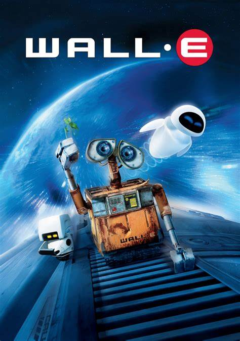

Wall-E

Wall-E es una profunda reflexión sobre nuestro impacto en el planeta.
La película nos presenta un futuro distópico donde la Tierra, consumida por la basura y la contaminación, ha
sido abandonada por la humanidad.
A través de la historia de Wall-E, un pequeño robot con un gran
corazón, y EVA, una exploradora robótica, la cinta nos invita a reflexionar sobre el valor de la naturaleza,
la importancia de las conexiones humanas y la necesidad de un cambio radical en nuestro estilo de vida.
Wall-E nos muestra las consecuencias devastadoras del consumismo excesivo y la dependencia tecnológica, al
tiempo que nos ofrece una esperanza renovada al mostrar la capacidad de la naturaleza para regenerarse y la
importancia de cuidar nuestro hogar.
En última instancia, la película es un llamado a la acción, un
recordatorio de que el futuro de nuestro planeta está en nuestras manos.
¿Qué ODS encontramos en Wall-E?
- ODS 11: Ciudades y comunidades sostenibles: La película muestra una
ciudad completamente cubierta de
basura, lo que evidencia la falta de planificación urbana sostenible y la gestión inadecuada de
residuos.
- ODS 12: Producción y consumo responsables: El estilo de vida consumista y
la generación excesiva de
residuos son los principales motores de la crisis ambiental presentada en la película.
- ODS 13: Acción por el clima: El cambio climático y sus consecuencias,
como el aumento del nivel del mar
y la desertificación, son temas centrales en la trama.
- ODS 15: Vida de ecosistemas terrestres: La destrucción de los ecosistemas
terrestres y la pérdida de
biodiversidad son evidentes en el paisaje desolado de la Tierra.
Reflexion en base a los ODS y Pelicula
- Miguel Arroyo ODS 11
Wall-E pinta un cuadro desolador de una Tierra
convertida en un inmenso basurero, un claro ejemplo de lo que puede ocurrir si no planificamos nuestras
ciudades de forma sostenible. La película nos muestra cómo el consumismo desenfrenado y la falta de
gestión de residuos han llevado a la humanidad a abandonar su hogar. Wall-E, el incansable robot
limpiador, se convierte en un símbolo de la esperanza y la resiliencia, demostrando que incluso en las
situaciones más extremas, es posible encontrar belleza y vida.
- Allison Navalles ODS 12
La sociedad consumista y desechable
retratada en Wall-E es una crítica mordaz al ODS 12. La película nos muestra cómo la obsesión por lo
nuevo y el despilfarro de recursos han llevado a la Tierra al borde del colapso. A través de la historia
de Wall-E, aprendemos que podemos reducir nuestra huella ecológica adoptando hábitos de consumo más
responsables, como reciclar, reutilizar y reparar.
- Francisco Perez ODS 13
El cambio climático es otro de los grandes
temas abordados en Wall-E. La película nos muestra un planeta devastado por el calentamiento global, con
niveles de contaminación alarmantes y una pérdida de biodiversidad sin precedentes. A través de la
historia de Wall-E y EVA, descubrimos la importancia de proteger nuestro planeta y de tomar medidas
urgentes para combatir el cambio climático.
- Veronica Rodriguez ODS 15
La Tierra de Wall-E es un lugar hostil y
desolado, donde la vida apenas puede sobrevivir. La película nos muestra cómo la destrucción de los
ecosistemas terrestres ha tenido consecuencias devastadoras para el planeta y para la humanidad. A
través de la historia de Wall-E y la planta que encuentra, descubrimos la importancia de proteger la
biodiversidad y de restaurar los ecosistemas dañados.